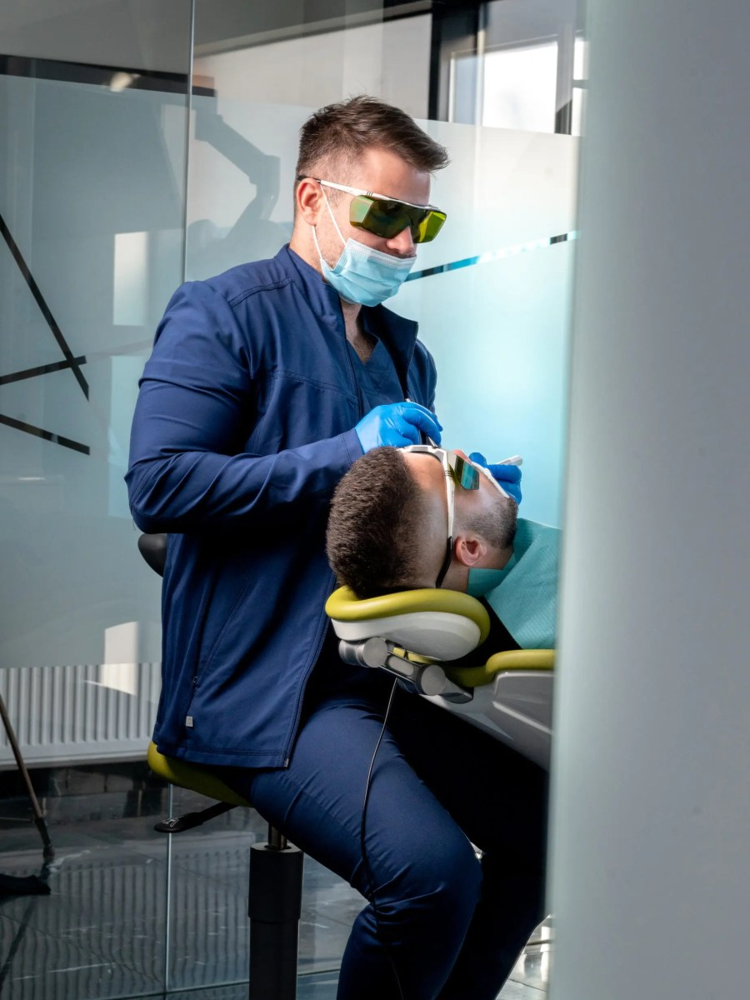
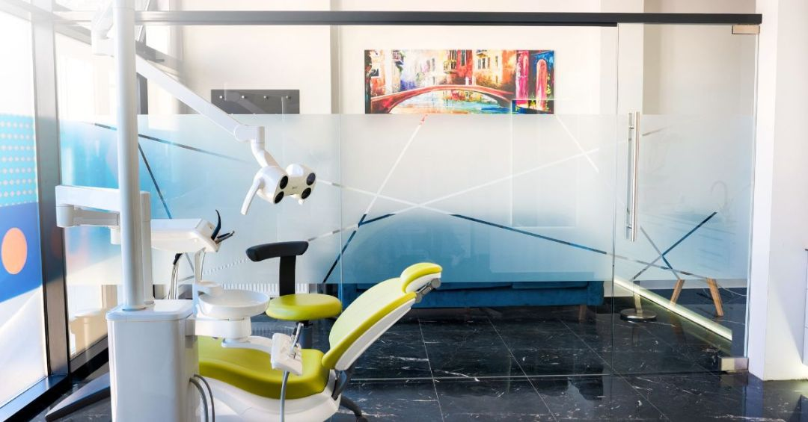
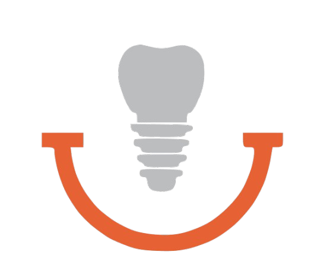

Stomatolog Novi Sad
ordinacija Art of Smile
Savremena stomatologija u službi vašeg osmeha. Od estetike i implantologije do bezbolnih laserskih tretmana — vrhunska nega uz najkvalitetnije materijale.

{{ p.title }}
{{ p.text }}

Dobro došli u ordinaciju Art of Smile
Stomatološka ordinacija Art of Smile svojim pacijentima nudi sve stomatološke usluge — od estetske stomatologije na koju stavljamo naglasak, do implantologije (zubni implantati, all on 4 i all on 6) i zubne protetike (viniri, krunice i zubni most).
Tu su i parodontologija, izbeljivanje zuba, konzervativno lečenje, ortodontske folije za ispravljanje zuba, kao i manji i veći hirurški zahvati — sve na jednom mestu, uz savremenu tehnologiju.
Stomatološke usluge — Art of Smile Novi Sad
Kompletna stomatološka nega pod jednim krovom — od prve konsultacije do savršenog osmeha.

Savremena stomatologija u službi vašeg osmeha
Naša glavna prednost je upotreba savremene tehnologije i najkvalitetnijeg materijala. Svakom pacijentu pristupamo individualno — bez stresa, bez žurbe, uz jasan plan i cenu unapred.
{{ r.text }}
Šta naši pacijenti govore o nama
{{ review.text }}
Česta pitanja — stomatolog Novi Sad
Ako ste u nedoumici, pozovite nas ili zakažite besplatnu konsultaciju.
{{ f.a }}
Zakažite svoj besplatan pregled
Ne gubite vreme tražeći rešenja na internetu. Postavite upit doktoru ili nas kontaktirajte za besplatan stomatološki pregled i konsultacije!
Zakažite pregled →Zakažite pregled danas
Popunite formu ili nas pozovite — javljamo se u najkraćem mogućem roku.